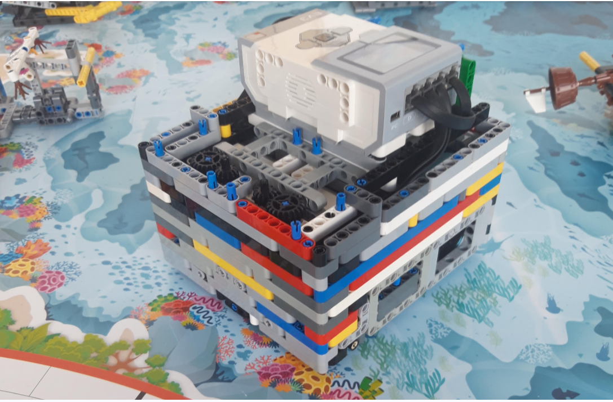

Naš robot

Naš robot je zgrajen v obliki kocke,da se lažje poravna na steno.Ima dva velika motorja,dva srednja motorja, dav barvna senzorja in en giro senzor.Zgrajen je kompaktno,da se ne bi podrl.Ima prenos od srednjih motorjev do mesta kjer natakneš nastavek.
Nastavki
Naši nastavki so zasnovani tako,da so hitro snemljvi in jih lahko hitro zamenjamo tako,da smanjšamo čas vožnje.Vsi nastavki imajo enako grodje,ki ga damo na mesto kjer je prenos iz srednjih motorjev.Nekateri nastavki so pripeti na motorje, nekateri pa ne.
Strategija reševanja misij
Na začetku. ko smo se dobili, smo zasnovali strategijo , ki smo jo potem večkrat spremenili. Osredotočili smo se na misije blizu leve začetne baze s katerimi smo naredili navječ točk.Potem smo te misije združevali v izhode.Naš cilj je bil,da smo imeli v enem izhodu čim več misij. Strategijo smo tudi redno spreminjali.
Testiranje
Testiranje je bilo pri nas zelo pomembno, saj smo glede na to kolikokrat je naredil, lahko izračunali koliko procentov naredi določeno misijo.Če je bilo povprečje manj kot 80% smo šli misijo narediti na drugačen način, saj robot pri tej misiji ni bil dovolj natančen.
Izboljšave
Veliko smo izboljševali.Npr. robot je bil prepočasen in potem smo mu zvečali hitrost. Obrati niso bili natančni zato smo potem dodali giro in smo se nato dalje obračali z giro senzorjem.Nastavke smo naridili bolj stabilne in izboljšali robota tako,da nastavki niso preskakovali, ko so bili nameščeni na motorje.Na začetku izhoda je robot malce poskočil in zaradi tega je potem zavil.Da bi to popravili,smo pametno kocko premaknili bolj na sredino robota,da smo uravnovestili težišče.